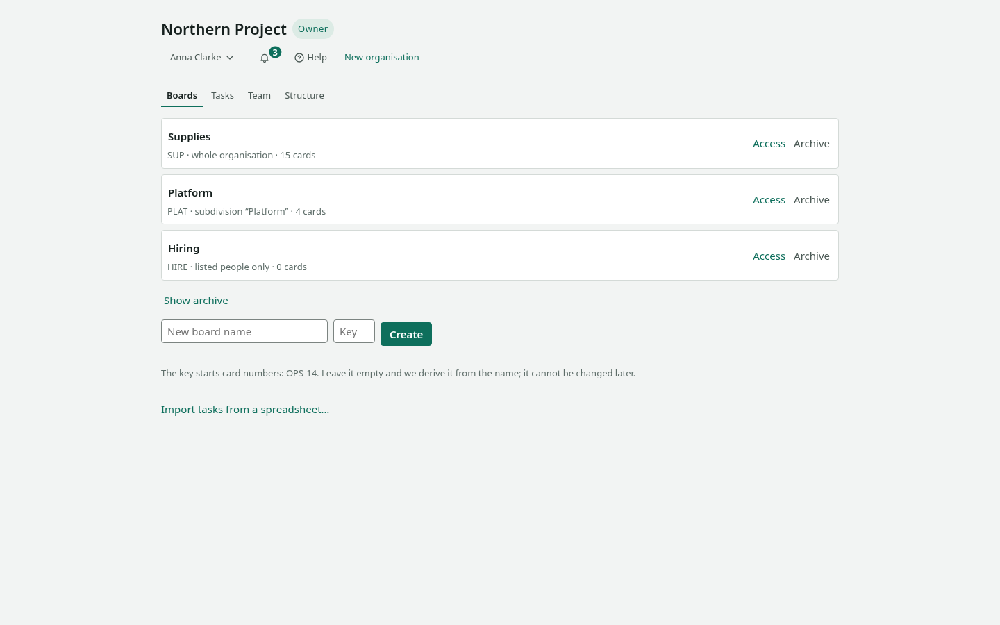

First fifteen minutes
Walk this path once and the board will stop needing explanations. We will create a board, put work on it, carry that work to the end, and invite a colleague.
You need a board open in a browser and fifteen minutes.
The interface is in Russian. Buttons are quoted below exactly as they appear on screen, with a translation next to them.

1. Create a board
- On the main screen, type a name into «Название новой доски» (name of the new board).
- Next to it, in «Ключ» (key), type a short word —
ПОСТ, say. It becomes the prefix of card numbers: ПОСТ-1, ПОСТ-2. Leave it empty and we derive it from the name. - Press «Завести» (create).
The board opens straight away with three columns: «Очередь» (queue), «В работе» (in progress), «Готово» (done). Those are stages of work, and you can change them.
2. Put work on it
- At the bottom of «Очередь», press «Завести карточку» (create a card).
- Write what needs doing and press
Enter.
Create three or four cards: with one, the board shows nothing.
3. Move a card
Drag a card into «В работе». Or, faster: focus it from the keyboard and press Ctrl with the right arrow.
The card flashes in its new place — that is how the board shows where it went. Everyone with this board open sees the change immediately.
4. Describe the work
- Click the card's title; a panel opens.
- Go to the «Работа» (work) tab.
- Assign an owner, set an estimate and a due date.

If work has stalled, press «Заблокировать» (block) and write the reason. The reason shows on the board itself: "blocked" with no explanation answers no question at all.
5. Carry it to the end
Move the card into «Готово». After a few such cards, open «Поток» (flow) in the board header: cycle time, throughput and a forecast appear there. The metrics are computed from what you have already done — nothing to invent.
6. Invite a colleague
- Open the «Команда» (team) tab.
- Under «Пригласить» (invite), enter an e-mail and pick a role.
- Press «Пригласить» and send the link that appears.
The link is addressed: someone with a different e-mail cannot accept it. It is shown once — only a fingerprint of it is stored.